◆◇◆◇◆◇◆◇◆◇Projeto Sustentabilidade em foco◆◇◆◇◆◇◆◇◆◇
Sustentabilidade em foco
📌Principios básicos
• Qual a diferença de Plástico para Bioplástico?
Bom, o bioplástico, é um plástico que tem as mesmas propriedades do plástico comum, mas se difere por usar como matéria-prima, fontes renováveis como resíduos de soja, amido de arroz, milho, cana de açúcar, etc. e por isso começa a disputar setores como o das embalagens e tubulações.
• O que é o produto biodegradável?
Por definição, os produtos biodegradáveis são todos aqueles fabricados com materiais rapidamente decompostos no meio ambiente. Assim, como são completamente absorvidos pela natureza, eles não deixam resíduos e geram menos impactos ambientais. Outro ponto importante em relação aos biodegradáveis é a composição.
🌎Iniciamos o projeto com o objetivo de participar do Circuito de Ciências das escolas públicas e ajudar na preservação do meio ambiente pois, tudo começa com pequenas atitudes e ações que fazem toda a diferença então decidimos combater um dos maiores poluentes do mundo; O PLÁSTICO.
Abaixo iremos mostrar nossa participação e alguns dos protocolos utilizados na feira.
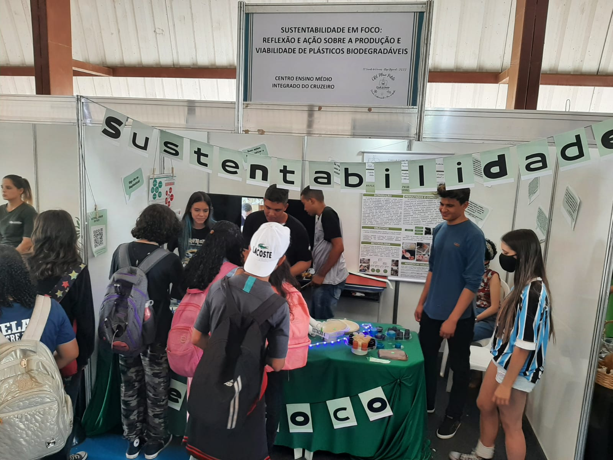
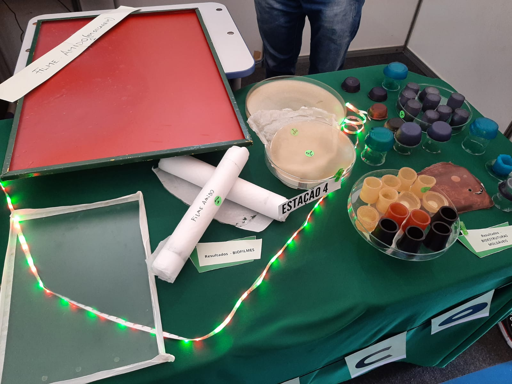
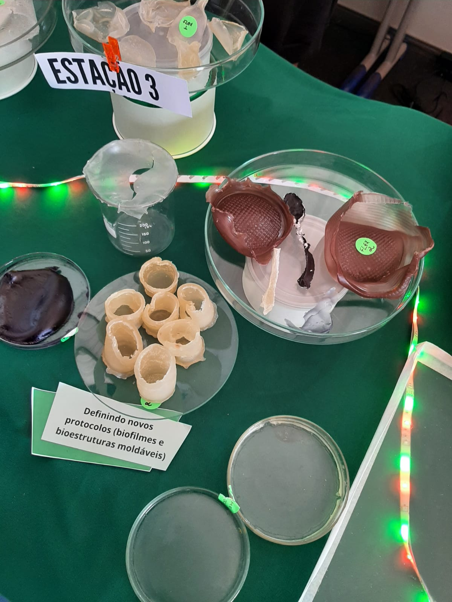
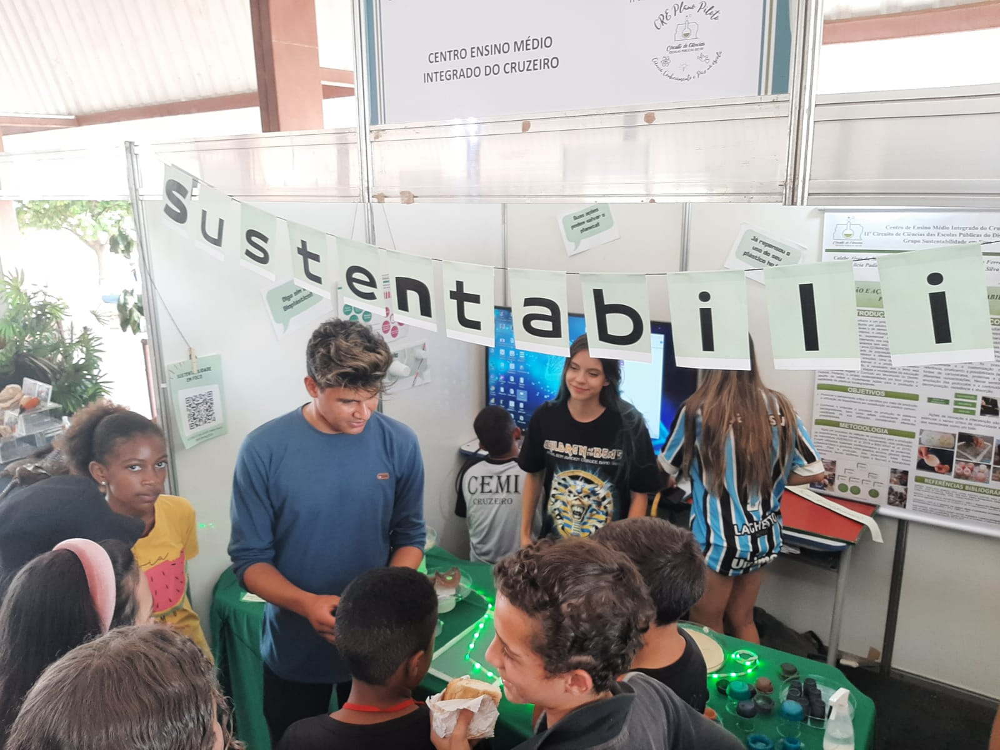
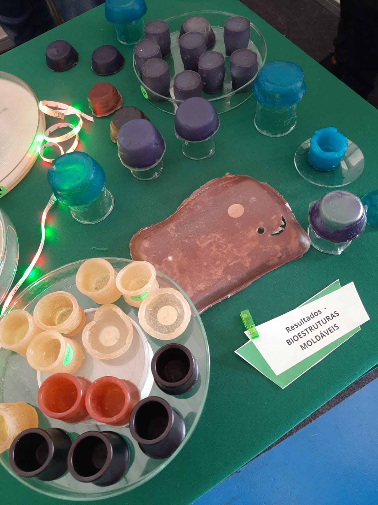
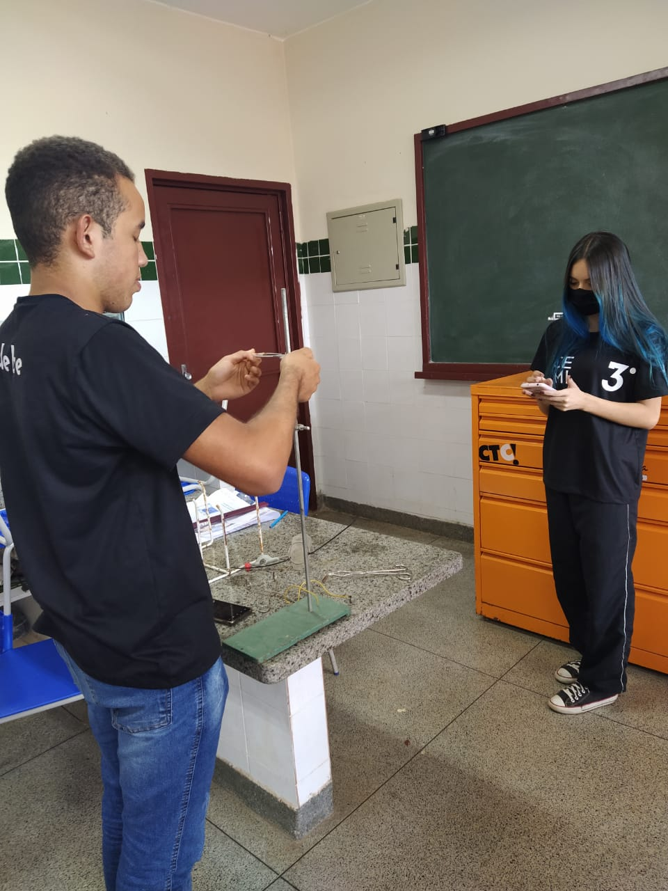
Também investigamos o tempo de decomposição de cada protocolo e pesamos cada um, concluímos o tempo médio de cada teste. Todos demoraram em média de 2 a 3 semanas para se decompor.
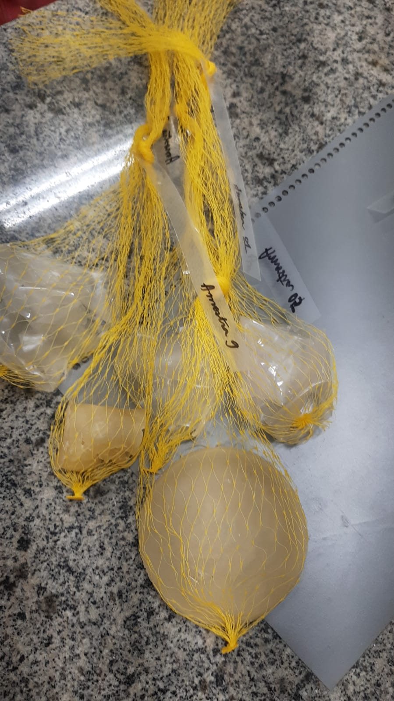
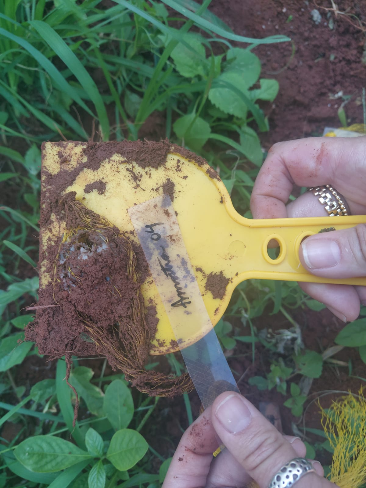
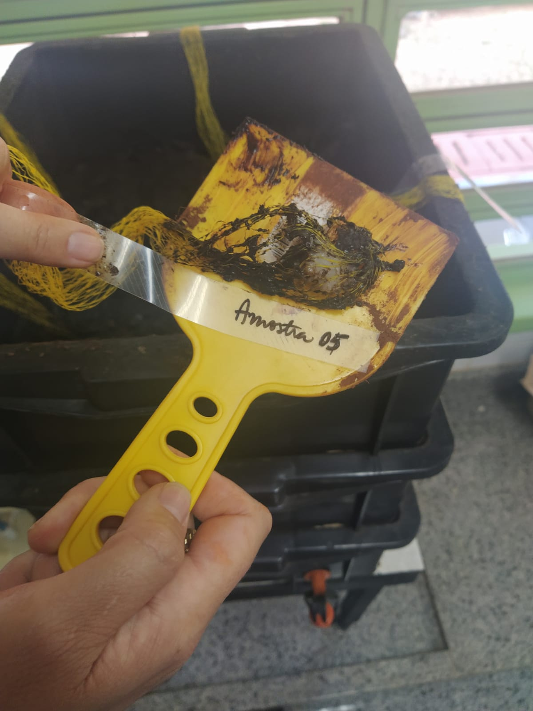
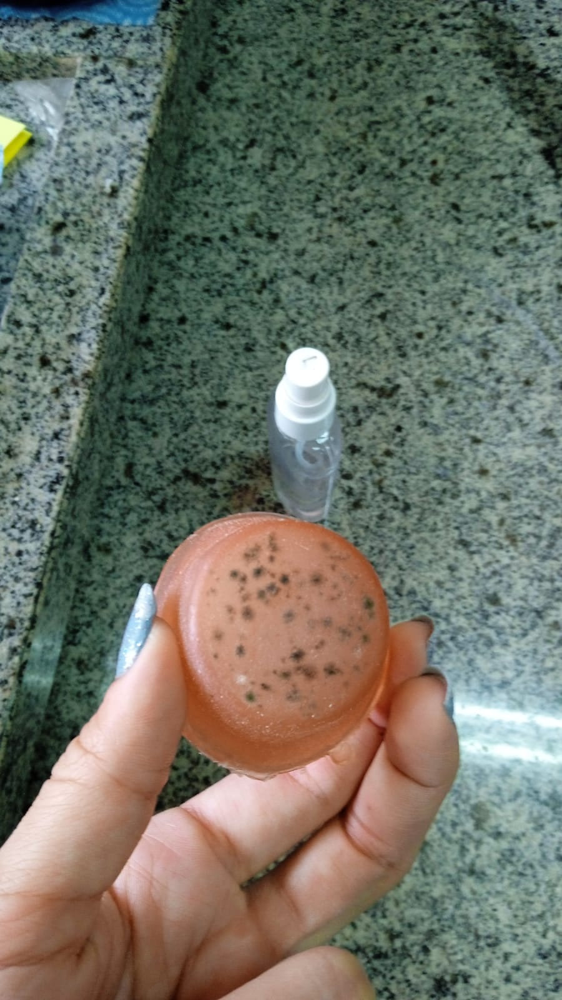
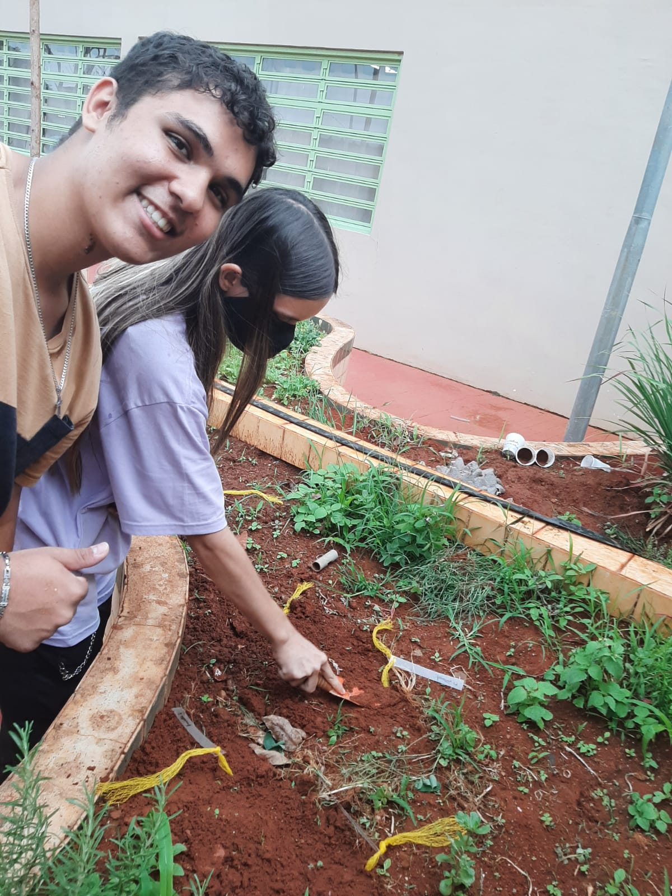
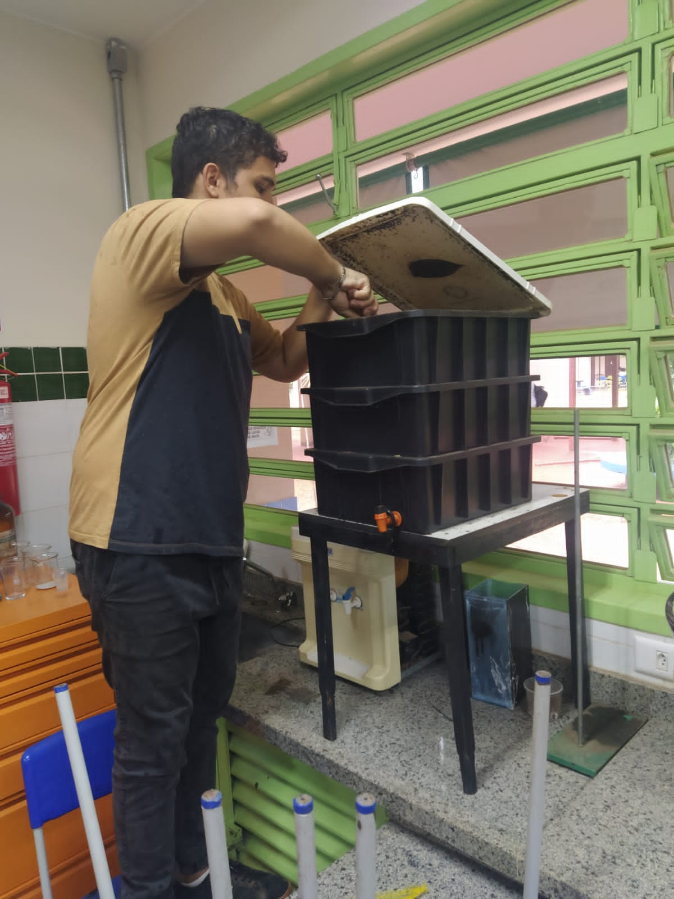
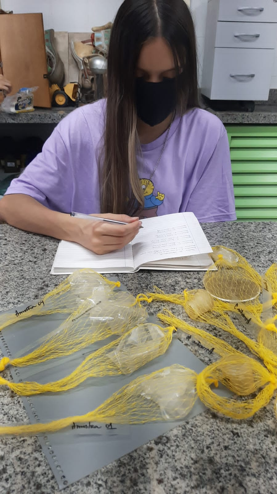
TESTES E EXPERIMENTOS
Vantagens do Bioplástico: entre os grandes benefícios que a indústria passa a ter ao investir na produção dos bioplásticos, podemos destacar:
•Economia em energia, uma vez que a produção de bioplásticos demanda, em média, 65% a menos de energia do que a produção de plásticos originados do petróleo;
• Bioplásticos geram menos gases de efeito estufa na atmosfera - algo em torno de 68% -, em comparação com o plástico de combustíveis fósseis;
• Com a produção de bioplásticos, o alto consumo de barris de petróleo da indústria plástica tende a ser reduzido, assim como os custos. Além disso, o setor ganha mais autonomia e variedade de produtos;
• O descarte dos bioplásticos gera menos impacto ao meio ambiente;
• A produção desse tipo de material possui uma boa relação custo/benefício;